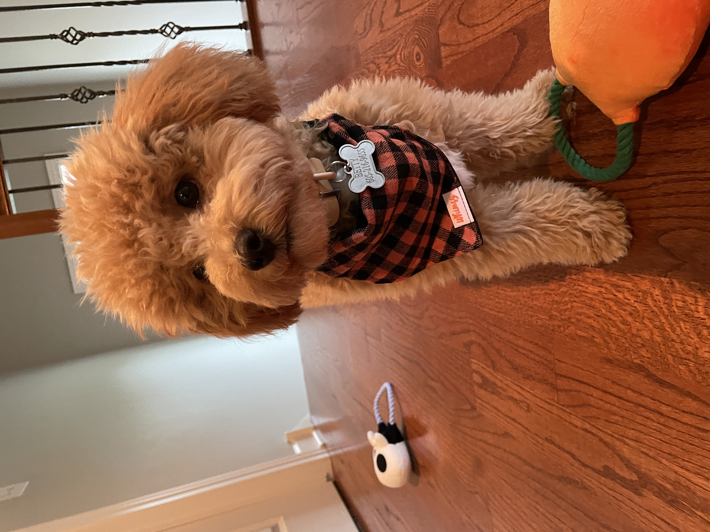

Fun!
Betty!
Betty is my dog that I resuced in April. She is a Havapoo, so half Havanes and half Poodle. She is a 8 months old! Some of her favorite things are ice cubes, whip cream, and people watching. We live on a busy street so she just sits on our belcany and watches people all day long.
